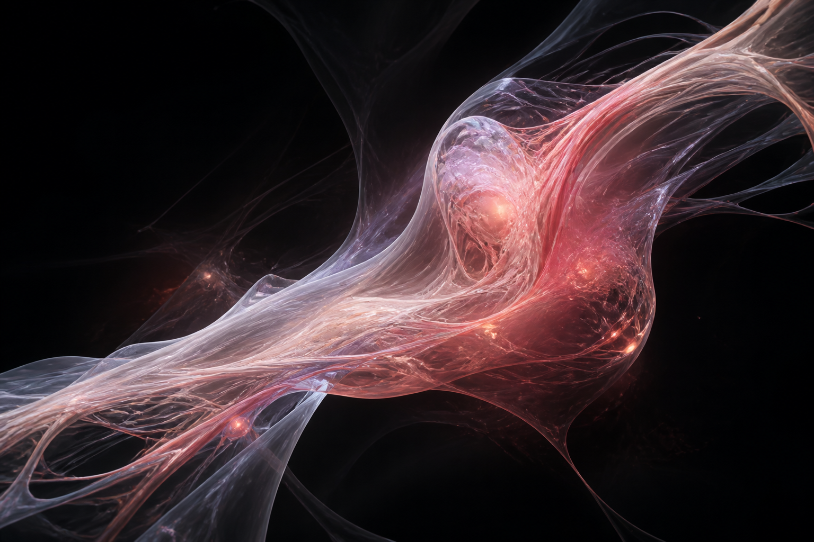

Рабочее пространство команды
Идеи становятся работой.
Задачи, сроки и движение проекта в одном живом пространстве. Перейти к доске ↘- Прогресс
- 0%
- Активно
- 0
- Готово
- 0
- Риск срока
- 0
Текущий спринт
Перетаскивайте карточки между этапами или меняйте статус внутри задачи.